Projet MousquetairesMusketeers Project
Un RPG tactique en temps réel avec pause active, édité par le label SUPER AC en vue d'une sortie commerciale. Né d'un prototype de jeu de plateau en école, porté depuis 2023 par une équipe de 11 personnes.
A real-time tactical RPG with active pause, published by the SUPER AC label for a commercial release. Born as a board game prototype at school, carried since 2023 by an 11-person team.
GD & Tech Designer
Oct. 2023 · en coursOct. 2023 · ongoing
11 personnes11 people
Label SUPER ACSUPER AC label
Contexte : l'influence DemeoContext: the Demeo influence
Au départ, l'objectif était de créer un jeu vidéo reprenant fidèlement les codes du jeu de plateau, dans le style de Demeo. Pour structurer cette approche, j'ai réalisé une analyse approfondie des boucles de jeu de Zombicide afin de les adapter au format numérique.
Initially, the goal was to create a video game faithfully reproducing board game conventions, in the style of Demeo. To structure this approach, I ran an in-depth analysis of Zombicide's game loops to adapt them to the digital format.
Méthode agile et universAgile method and universe
Durant la phase de conception, nous avons utilisé des méthodes agiles et d'association d'idées pour définir l'univers du jeu. Notre réflexion balançait initialement entre deux thématiques fortes : le Steampunk et un univers de Vampires.
During the concept phase, we used agile brainstorming and word association methods to define the game's universe. Our ideas initially balanced between two strong themes: Steampunk and a Vampire universe.
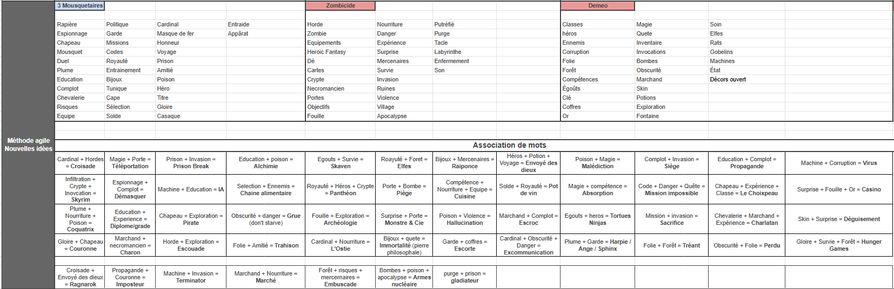
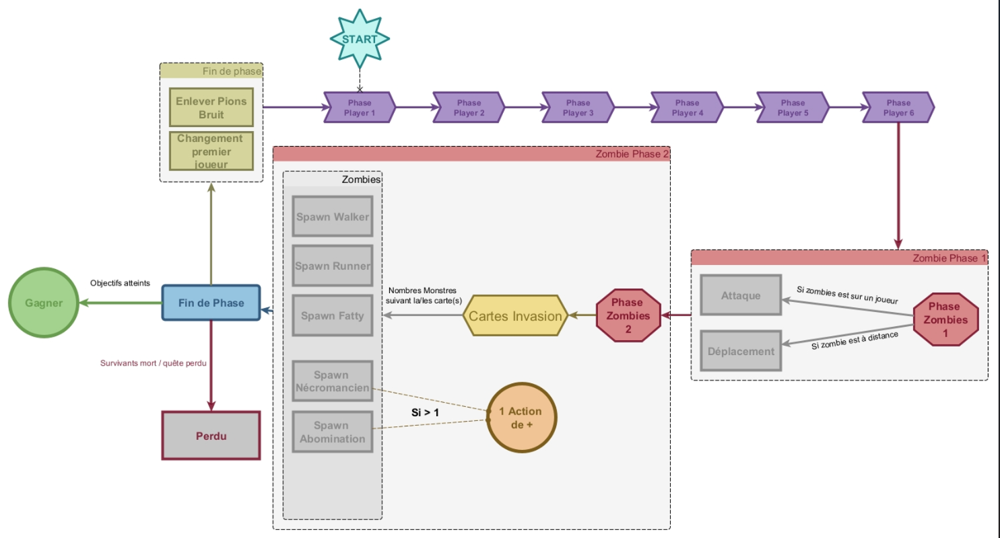
J'ai ensuite comparé les piliers de la version plateau de Zombicide et de la version hybride de Demeo pour définir les fonctionnalités clés de notre prototype initial.
I then compared the pillars of the Zombicide board version and the hybrid Demeo version to define the key features of our initial prototype.
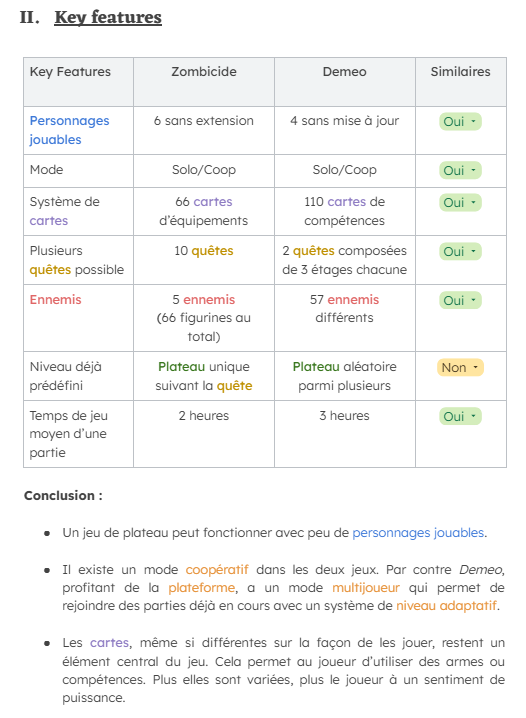
Vers un RPG en temps réelTowards a real-time RPG
Après plusieurs tests, nous avons constaté que le pur tour par tour manquait d'engagement. Nous avons décidé de pivoter vers un RPG en temps réel avec pause active, inspiré de Dragon Age et Solasta, pour dynamiser l'expérience.
After several playtests, we found that pure turn-based play lacked engagement. We decided to pivot to a real-time RPG with active pause, inspired by Dragon Age and Solasta, to energize the experience.
Attributs & coûts pondérésAttributes & weighted costs
J'ai formalisé l'intégralité des règles mathématiques du jeu sur Excel, avec un système pyramidal où chaque attribut primaire influence directement 3 statistiques secondaires.
I formalized all of the game's mathematical rules in Excel, with a pyramidal system where each primary attribute directly drives 3 secondary stats.
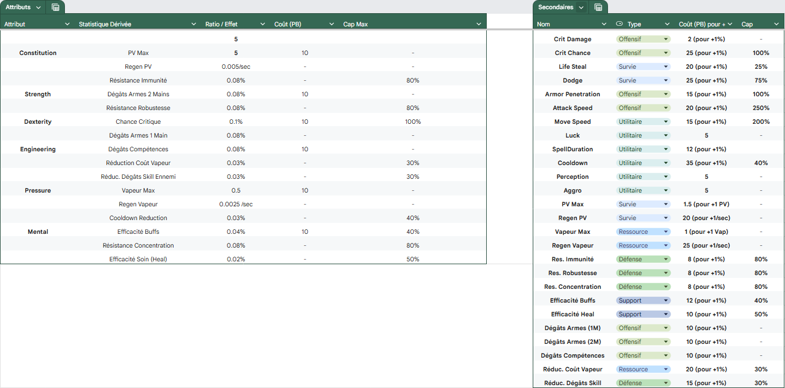
Pour assurer l'équilibrage, j'ai défini des coûts pondérés : il faut investir 2 points pour obtenir 1 % de critique, contre 20 points pour 1 % de vol de vie. J'ai aussi instauré des plafonds pour qu'aucune statistique ne devienne trop puissante.
To keep things balanced, I defined weighted costs: 1% crit costs 2 points, while 1% lifesteal costs 20 points. I also set caps so that no stat becomes overpowered.
Arbres de compétencesSkill trees
Pour garantir une profondeur stratégique, j'ai conçu des arbres de compétences sur Miro. L'objectif : permettre au joueur de créer des synergies uniques entre les différentes classes.
To ensure strategic depth, I designed skill trees in Miro. The goal: let players build unique synergies between classes.
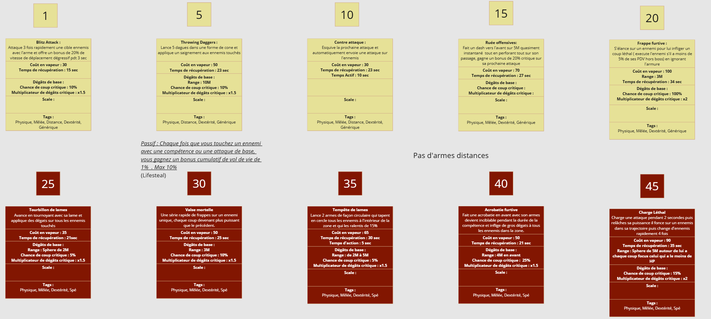
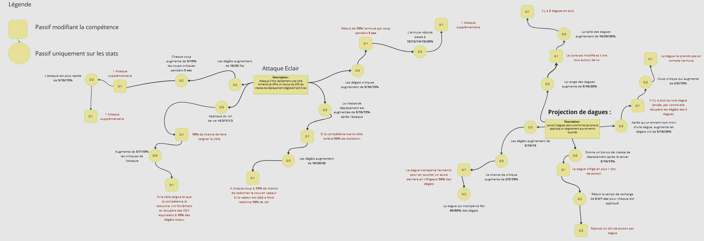
Architecture : Scriptable Objects & FSMArchitecture: Scriptable Objects & FSM
Pour l'implémentation, j'ai mis en place une architecture modulaire basée sur les Scriptable Objects d'Unity. L'équipe design peut ainsi créer du contenu directement dans l'inspecteur, en autonomie.
For implementation, I set up a modular architecture based on Unity's Scriptable Objects, so the design team can create content directly in the inspector, on its own.
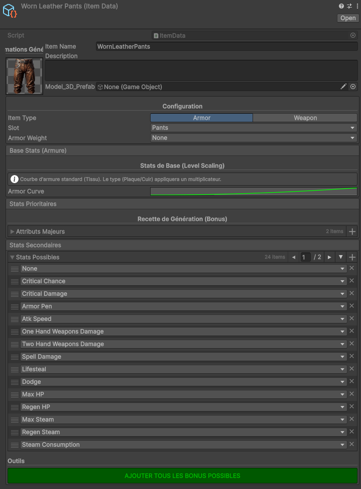
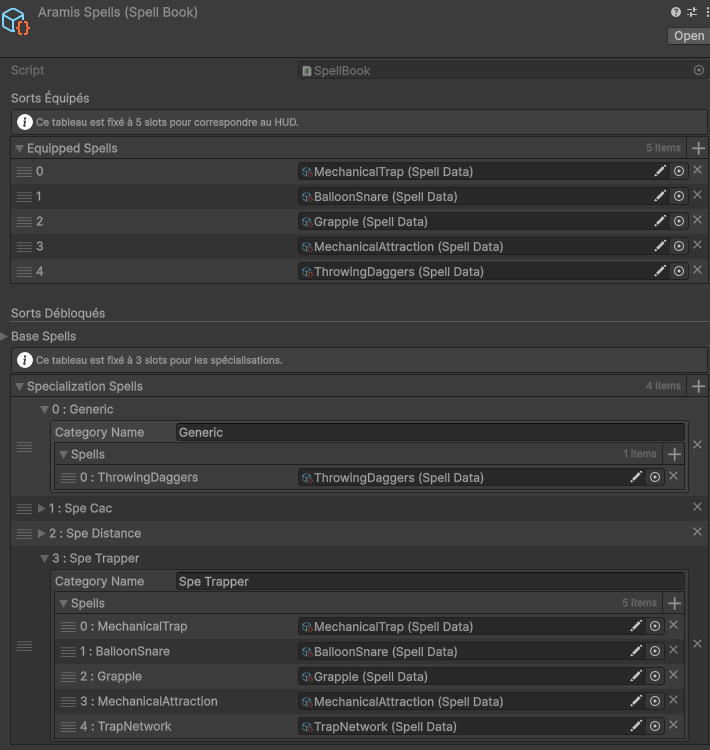
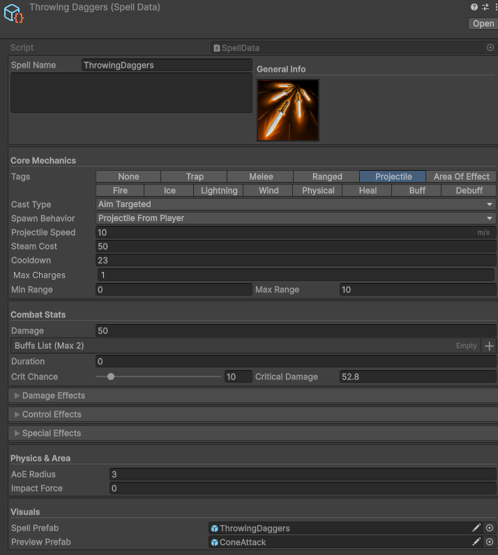
Standardisation avec Playmaker (FSM)Standardization with Playmaker (FSM)
J'ai conçu un modèle de machine à états sous Playmaker pour gérer la boucle complète d'utilisation d'une compétence : détection, ciblage et instanciation.
I designed a state machine template in Playmaker to handle the full skill usage loop: detection, targeting and instantiation.
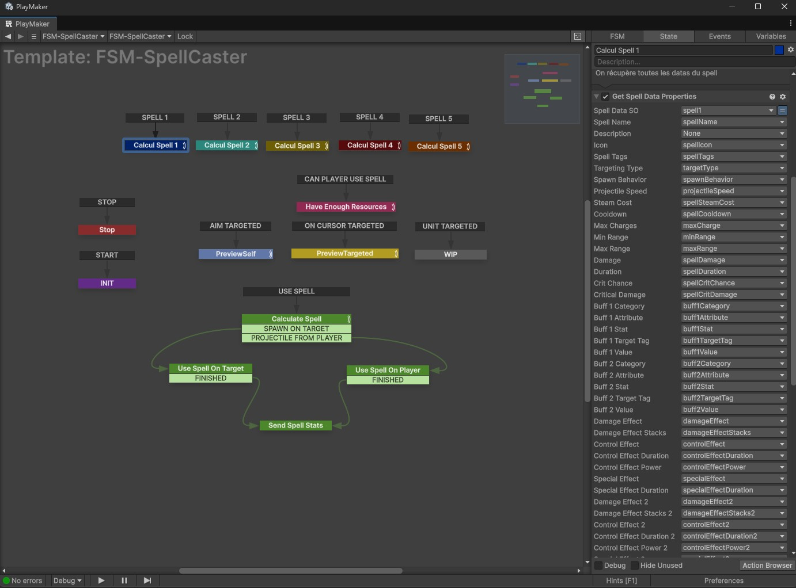
Économie & lootEconomy & loot
L'économie repose sur 6 niveaux de rareté, de Commun à Mythique. J'ai aussi créé des objets maudits qui apportent des bonus massifs, contrebalancés par des malus handicapants.
The economy relies on 6 rarity tiers, from Common to Mythic. I also created cursed items that grant massive bonuses, offset by crippling penalties.
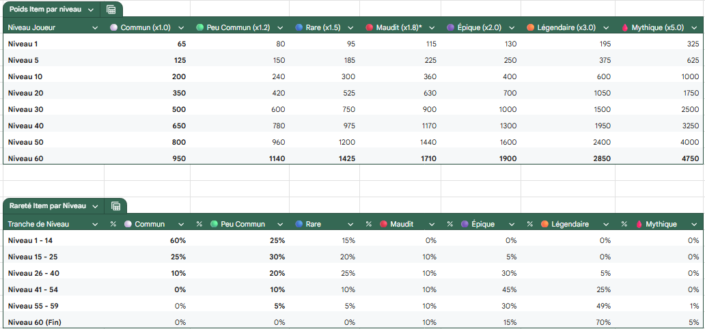
Le tableau ci-dessous définit le poids théorique de chaque objet par niveau. Un objet créé a ainsi des statistiques mathématiquement adaptées au niveau actuel du joueur.
The table below sets the theoretical weight of each item per level, so any new item gets stats mathematically scaled to the player's current level.
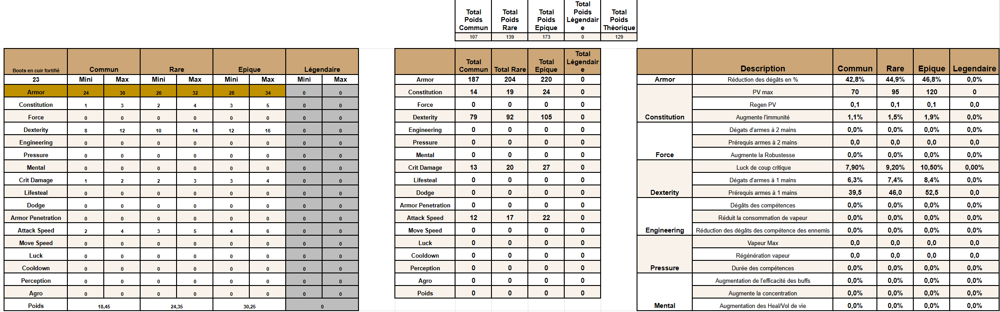
Production & suiviProduction & tracking
J'ai mis en place des pipelines de production pour synchroniser l'équipe : outils de suivi de l'avancement des tâches et fichier de suivi pour la chasse aux bugs (QA).
I set up production pipelines to keep the team in sync: task progress tracking tools and a QA bug-hunting tracker.
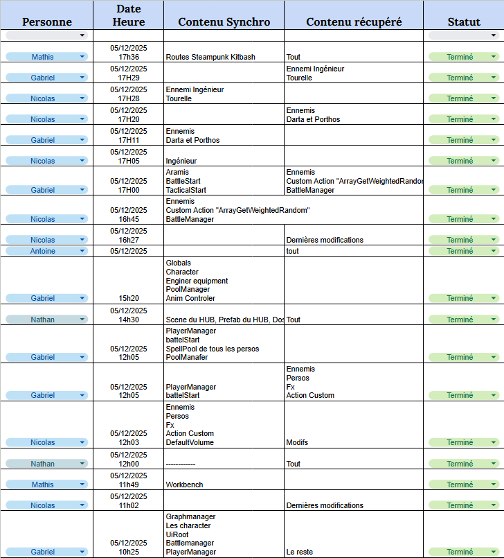
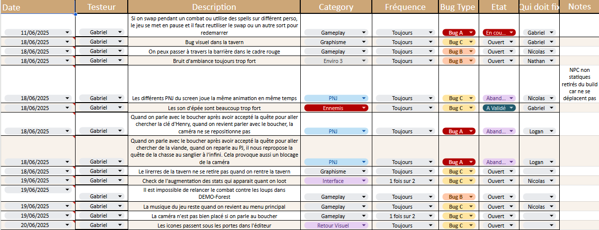